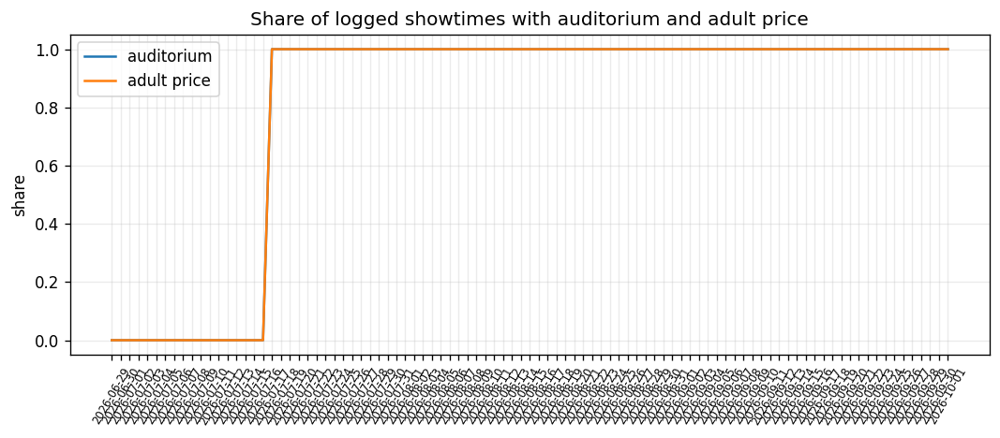
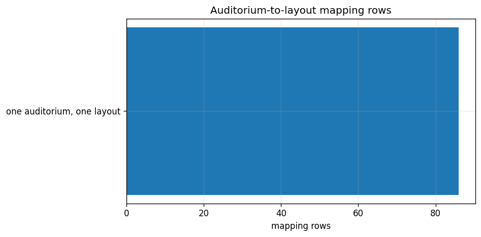
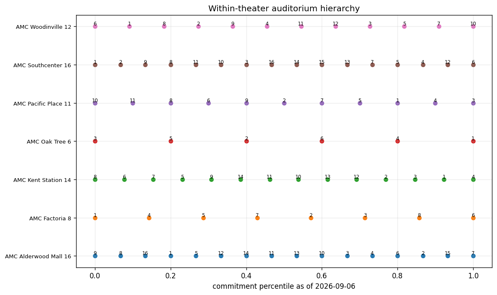
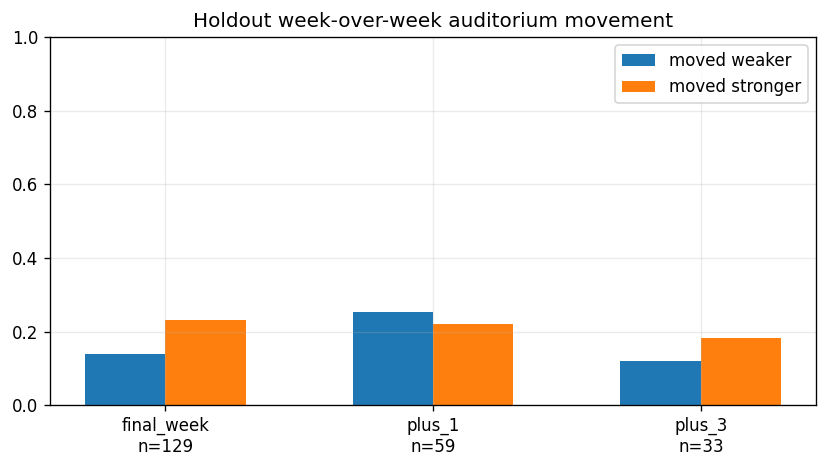
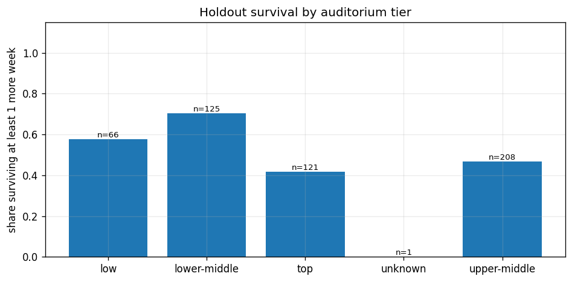
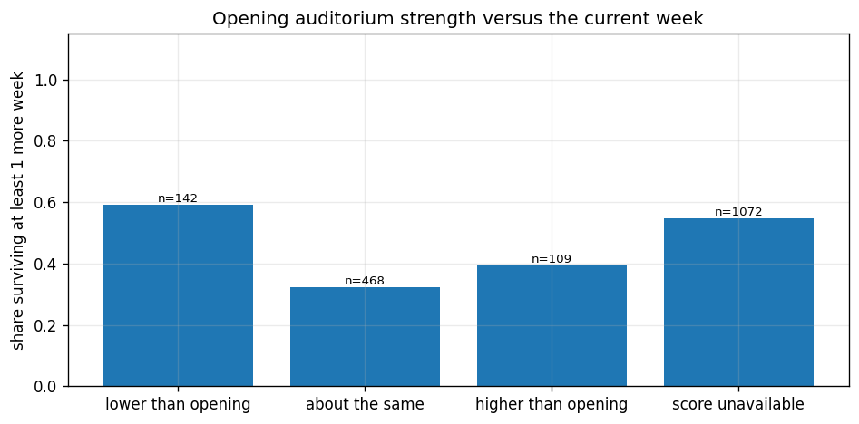
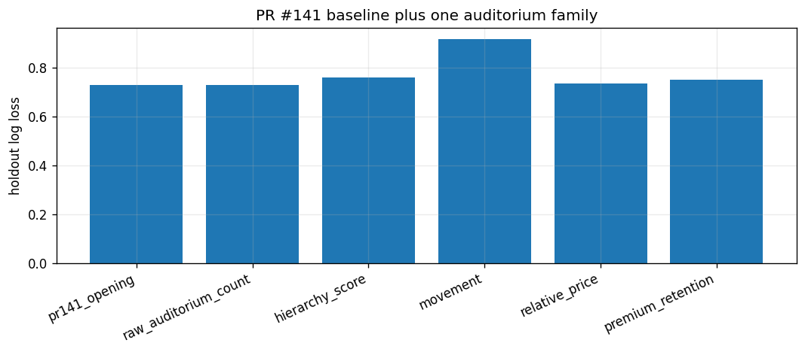
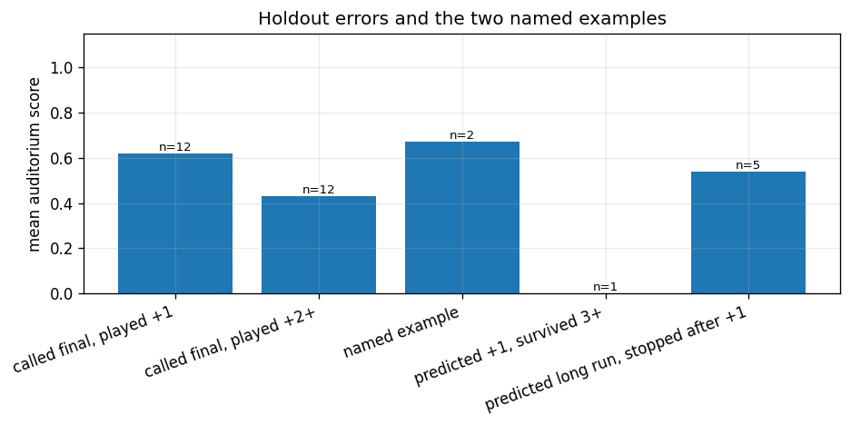

Research only. Production Leaving Soon scoring, thresholds, and the public artifact were not changed. Scores use showtimes that had already played before the prediction date. Premium format and ticket price are not inputs to the hierarchy score.
The first daily log with an auditorium number is 2026-07-17. The last probed log without it is 2026-07-16. Layout id and layout version arrive in the same capture. Adult price is on the same records. Pre-publication rows with a matched auditorium: 1457 of 1907. Holdout rows with a usable score: 520.

| key | showtimes | auditorium_share | adult_price_share | is_sold_out_true | is_almost_sold_out_true |
|---|---|---|---|---|---|
| 2026-07-17 | 3502 | 1.000 | 1.000 | 12 | 30 |
| 2026-07-18 | 3324 | 1.000 | 1.000 | 11 | 26 |
| 2026-07-19 | 3114 | 1.000 | 1.000 | 13 | 23 |
| 2026-07-20 | 2876 | 1.000 | 1.000 | 13 | 18 |
| 2026-07-21 | 3635 | 1.000 | 1.000 | 12 | 24 |
| 2026-07-22 | 4288 | 1.000 | 1.000 | 26 | 30 |
| 2026-07-23 | 4104 | 1.000 | 1.000 | 26 | 31 |
| 2026-07-24 | 3867 | 1.000 | 1.000 | 5 | 38 |
83 theater-auditorium pairs keep one layout id on the show-date listing. 0 do not, including any auditorium whose layout id is missing. No layout version changes appear on those show-date rows, and no layout id is shared by two auditorium numbers. Across earlier logs for the same showtime, the auditorium number differs on 914 of 38973 keys and the layout id differs on 906. That is a small pre-show reassignment rate, not a rotating layout identity. Auditorium number can be treated as a persistent screen inside one theater. It is not comparable across theaters, and layout id is not a more stable key.

As of 2026-09-06, an auditorium needs 40 played showtimes before it receives a score. The raw score is the average of prime-time share, Friday/Saturday evening share, opening-week share, and wide-opening share, using only shows dated before that day. Percentile rank is inside the theater. Price and premium format are left out of the score. Every enabled theater has a spread from 0 to 1, so the screens are not identical. Dedicated premium rooms (premium share at least 80%) land in these tiers: {'low': 8}. Several of the lowest-scoring auditoriums are the premium houses, because they take fewer opening-week bookings. The ranking is a programming pattern. It is not a seat-capacity ranking.

Holdout survival for at least one more week by tier: low 57.6% (n=66); lower-middle 70.4% (n=125); top 41.7% (n=120); unknown 0.0% (n=1); upper-middle 46.9% (n=207). The top tier does not keep films longer than the lower tiers. On labeled holdout rows with both weeks matched, final-week films moved to a weaker auditorium in 14.0% of cases (n=129) and to a stronger one in 23.3%. Films with 3 or more weeks left moved weaker in 12.1% (n=33). Departure is not preceded by a move to a weaker screen.



The comparison model is the PR #141 weekly hazard: pre-publication features plus opening footprint. Holdout log loss is 0.727, final-week PR-AUC 0.910, exactly +1 0.454, exactly +2 0.245, 3+ 0.796, median expected-week error 0.207, pairwise urgency 87.7% (n=405).
Hierarchy score alone: log loss 0.757, final-week 0.903, +1 0.392, +2 0.271, 3+ 0.796. Bootstrap change versus PR #141, hierarchy minus baseline: log loss 0.030 (0.014 to 0.047); final-week PR-AUC -0.007 (-0.017 to 0.002); +1 -0.063 (-0.130 to -0.005); +2 0.031 (-0.041 to 0.127). Negative log loss is an improvement. An interval that crosses zero is not a supported gain.
Raw auditorium count alone changes log loss from 0.727 to 0.727. Its bootstrap log-loss change is -0.000 (-0.003 to 0.003). Week-over-week movement alone moves log loss to 0.916. Premium retention alone moves it to 0.748. All auditorium families together reach log loss 1.008, bootstrap 0.281 (0.194 to 0.384).

| model | mode | n | log_loss | brier | pr_auc_final_week | pr_auc_exactly_1 | pr_auc_exactly_2 | pr_auc_3_plus | median_abs_error_capped | ranking_pairwise |
|---|---|---|---|---|---|---|---|---|---|---|
| pr141_opening | 405 | 0.727 | 0.354 | 0.910 | 0.454 | 0.245 | 0.796 | 0.207 | 0.877 | |
| raw_auditorium_count | cumulative | 405 | 0.727 | 0.354 | 0.909 | 0.447 | 0.244 | 0.799 | 0.210 | 0.878 |
| raw_auditorium_count | added_alone | 405 | 0.727 | 0.354 | 0.909 | 0.447 | 0.244 | 0.799 | 0.210 | 0.878 |
| hierarchy_score | cumulative | 405 | 0.766 | 0.383 | 0.902 | 0.366 | 0.260 | 0.799 | 0.261 | 0.868 |
| hierarchy_score | added_alone | 405 | 0.757 | 0.375 | 0.903 | 0.392 | 0.271 | 0.796 | 0.237 | 0.869 |
| movement | cumulative | 405 | 0.974 | 0.436 | 0.858 | 0.362 | 0.177 | 0.755 | 0.286 | 0.827 |
| movement | added_alone | 405 | 0.916 | 0.401 | 0.864 | 0.404 | 0.200 | 0.761 | 0.219 | 0.839 |
| relative_price | cumulative | 405 | 0.990 | 0.437 | 0.863 | 0.351 | 0.213 | 0.742 | 0.284 | 0.824 |
| relative_price | added_alone | 405 | 0.734 | 0.359 | 0.912 | 0.445 | 0.254 | 0.794 | 0.191 | 0.874 |
| premium_retention | cumulative | 405 | 1.008 | 0.444 | 0.856 | 0.365 | 0.199 | 0.733 | 0.287 | 0.821 |
| premium_retention | added_alone | 405 | 0.748 | 0.356 | 0.902 | 0.476 | 0.264 | 0.783 | 0.219 | 0.874 |
| all_auditorium | cumulative | 405 | 1.008 | 0.444 | 0.856 | 0.365 | 0.199 | 0.733 | 0.287 | 0.821 |
Adult price is tested as the week's mean, divided by the theater median, the same theater's premium-or-standard median, and the same theater/daypart median. Medians use played shows dated before the snapshot. Price is not treated as demand. Added alone, log loss is 0.734. Bootstrap log-loss change 0.008 (-0.016 to 0.040). If that interval crosses zero, relative price does not earn a feature.
isSoldOut is true on 462 log rows (40 films, 7 theaters), out of 354375 captured showtime rows. 42 of those truths fall on the show date and 420 fall on an earlier log, so the same showtime can be counted more than once. isAlmostSoldOut is true on 1199 log rows, 13 films, 7 theaters; 236 fall on the show date. Both flags are too rare, and too concentrated in a handful of films, to estimate a remaining-week hazard. Keep logging them. This audit does not put them in the model.
Cars: 20th Anniversary at Alderwood on 2026-09-08 was called final and played one more week. It was already on auditorium 15, a top-tier screen, with premium retained and only a 0.04 drop from its opening score, while showing 16 times off an opening footprint of 3. The screen assignment agreed with a still-strong booking. It did not mark the extra week. By Any Means at Alderwood on 2026-09-08 was still near its opening score (about 0.50 versus 0.44), lower-middle tier, premium retained, 36 screenings, and the model still treated the run as long. Auditorium assignment did not contain the exit those two misses needed.

| title | observation_date | error_class | bucket | predicted_bucket | dominant_auditorium | tier | mean_auditorium_score | opening_auditorium_score | premium_lost_since_prior_week | mean_adult_price | current_week_screenings | opening_week_screenings | p0 |
|---|---|---|---|---|---|---|---|---|---|---|---|---|---|
| Cars: 20th Anniversary | 2026-09-08 | called final, played +1 | 1 | 0 | 15 | top | 0.892 | 0.933 | 0.000 | 16.933 | 16.000 | 3.000 | 0.947 |
| Cars: 20th Anniversary | 2026-09-15 | named example | 0 | 0 | 2 | upper-middle | 0.620 | 0.933 | 0.000 | 16.285 | 15.000 | 3.000 | 0.930 |
| By Any Means | 2026-09-15 | named example | 0 | 2 | 4 | upper-middle | 0.723 | 0.440 | 1.000 | 15.610 | 24.000 | 5.000 | 0.089 |
| By Any Means | 2026-09-08 | predicted long run, stopped after +1 | 1 | 3 | 11 | lower-middle | 0.498 | 0.440 | 0.000 | 16.422 | 36.000 | 5.000 | 0.029 |
AMC auditorium number, layout id, layout version, adult price, isSoldOut, and isAlmostSoldOut are already on the daily logs from the first capture date above. No additional AMC collector is required. Do not call restricted seat-map endpoints. Exact auditorium capacity is not available from the currently accessible public/catalog API. maximumIntendedAttendance is present on the showtimes payload and empty in the daily logs. No seat-count field is documented on the showtimes or movies catalog records used here.
A research-only TMDB snapshot writer stores popularity, vote count, and vote average with a timestamp, film id, and TMDB id. It is not used in this historical evaluation. Run it only with TMDB credentials, and pass film rows on stdin. Output path: data/research/tmdb_weekly/.
Adding the auditorium hierarchy made holdout log loss worse, and the bootstrap interval stays above zero. Leave it out.
Raw auditorium number is a within-theater label and is a poor cross-theater feature. Layout id does not replace auditorium number when one layout is shared. Premium retention stays a separate family from screen importance. Sold-out flags stay logged and unused until they are common.